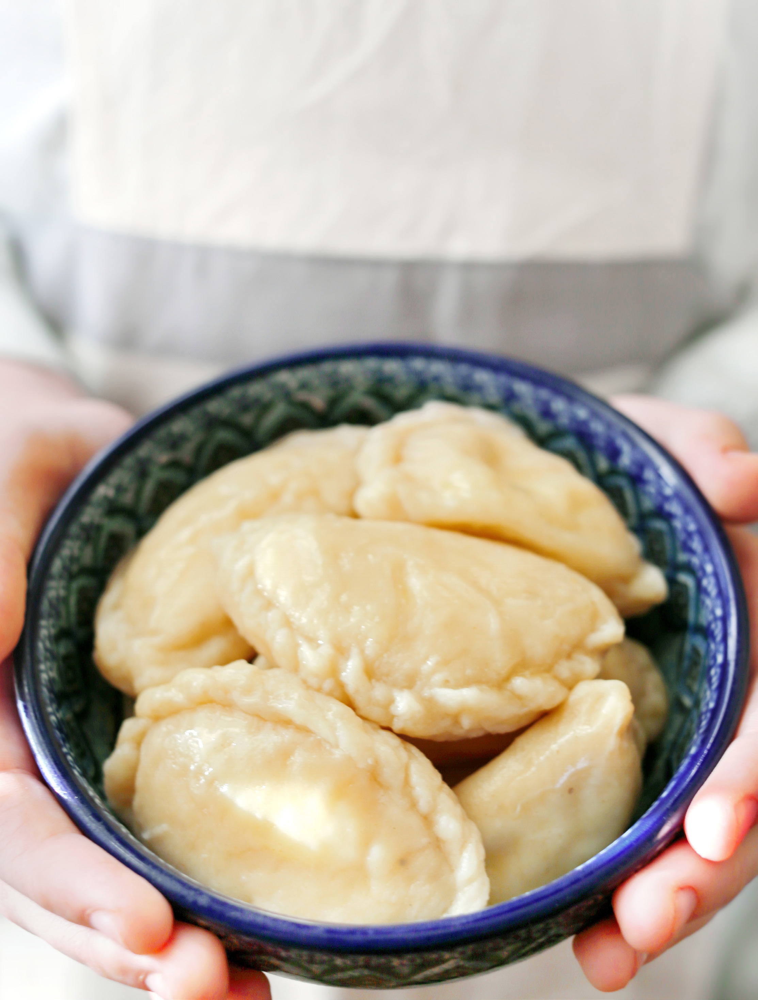

Вареники — один из главных символов украинской кухни. Существует большое количество рецептов этого блюда, с разными начинками и видами теста. Наиболее традиционные — с вишней, творогом, капустой, картошкой и луком, но есть и множество других вариаций. Предлагаем вам три разных рецепта теста и ниже — три самые популярные начинки.
заварное тесто:
тесто на молоке для любых вареников:
тесто для несладких вареников: